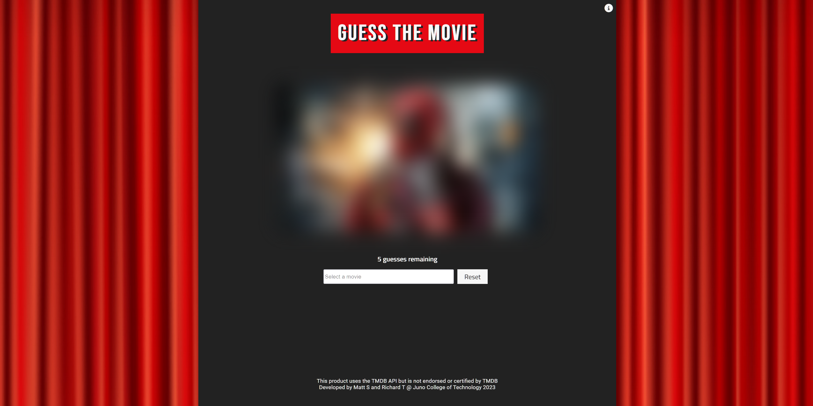
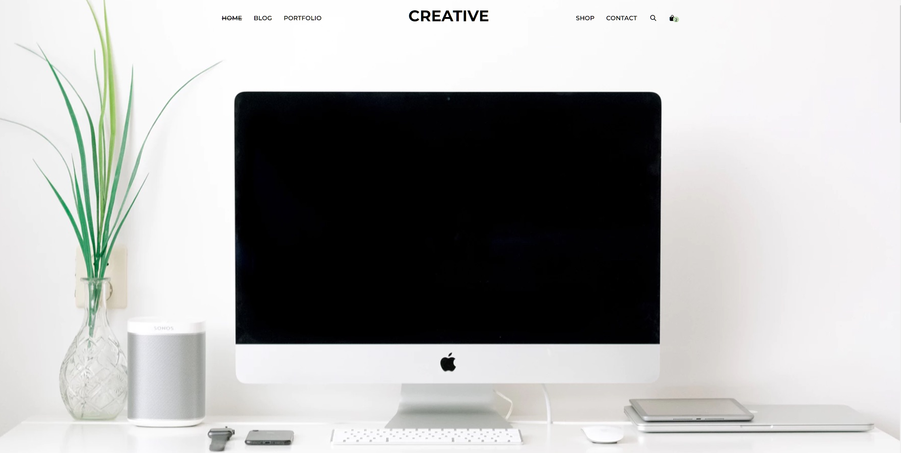

about me
Get to know me
Hi, I'm Matt Spencer
I'm a imaginative and creative Front-end Web Developer from the UK 🇬🇧 based in Ontario, Canada 🇨🇦. With an expansive and ever-growing front-end techstack, I have a passion for creating visually stunning websites. My keen eye 👀 for accessibility and responsive design ensures all of my websites are responsive, user-friendly, and adhere to accessibility standards.
When I’m not in front of my computer, you can find me playing guitar, collecting vinyl records, listening to heavy metal, and hanging out with my cat.
Name:
Matt Spencer
Email:
mattspencercodes@gmail.com
From:
Cheshire, UK
Based In:
Greater Toronto Area
My techstack
How I can help your next project
HTML5
Stucturing and adding content to modern webpages.
Sass & CSS3
Syntactically awesome styling and maintaining larger and more complex stylesheets for webpages.
Javascript
Creating complex functionality on webpages to make them interactive and dynamic.
React & Firebase
Building reusable UI components for performant web applications with reduced need for server-side code.
git and github
Proficient with web-based version control for powerful collaboration.
responsive design
Making websites easily viewed and navigated on a wide range of devices.
My Projects
Some of my most recent projects
-

'Guess the Movie'
A movie guessing game created in collaboration with another developer, where users are shown a blurred image of a popular movie, and have to guess the film from a drop down menu of titles pulled from an API. Click to play!
'Guess the Movie'
A movie guessing game created in collaboration with another developer, where users are shown a blurred image of a popular movie, and have to guess the film from a drop down menu of titles pulled from an API. Click to play!
-

PSD Conversion
Converted a static PSD into a fully responsive and accessible multi-page website that is optimized for all screen sizes and devices.
PSD Conversion
Converted a static PSD into a fully responsive and accessible multi-page website that is optimized for all screen sizes and devices.
Summarized Resume
A summary of my resume
Education History
Frontend web development certificate
Juno College of Technology, Toronto ON / 2023
An intensive virtual program with over 300 hours of live virtual learning, covering topics such as JavaScript, HTML and CSS to create visually appealing and responsive websites.
- JavaScript & React
- HTML5 & CSS3
- Rest APIs & Firebase
- Git & Command Line Tools
- Web Accessibility Requirements
Animal Management Diploma
Reaseheath College, Nantwich, England / 2010
A 2-year diploma studying the biology, behavior, and care of both domestic and wild animals.
Work Experience
Supervisor/Landscape Gardener
TJS Garden Services, Northwich, England / 2017 - 2022
Supervised a team of 3 gardeners as we designed, installed, and maintained the gardens of 50+ customers, both residential and commercial, earning the company upwards of $20,000 monthly
Collaborated with clients to achieve project objectives, and re-visited sites every 2 weeks to ensure garden upkeep and continued customer satisfaction
Landscape Gardener
Self Employed, Frodsham, England / 2011 - 2017
Worked with a team of 3 other gardeners on a 40-acre country estate, maintaining the gardens and woodlands and taking care of their 50+ animals
Collaborated with landscape designers and implemented garden blueprints to successfully create and build landscape architecture and gardens while meeting deadlines
Interested in seeing my full resume?Let me know!
FAQ
Answers to some questions you may be asking...
Web development is something I've always seriously considered as a career path, and when I moved to Canada in June 2022 I decided to dive head-first into the world of Front-End Web Development. After months of self-led learning, I enrolled in a Frontend Web Development Bootcamp at Juno College of Technology. I had already moved to a new country, why not start a new career as well?! Read more about my career transition here.
While Gardening and Web Development may seem completely unrelated, both involve collaborating with team members to turn client visions into realities, and require attention to detail, communication, problem solving, and constant learning. I've gone from collaborating with landscape designers and implementing garden blueprints to create beautiful lawns, to collaborating with web designers and following project briefs to create beautiful websites!
As a Web Developer, I create visually appealing and user-friendly websites that are responsive on various devices, and meet web accessibility standards. I also maintain website designs, layouts, and functionality, ensuring flawless user experiences. Overall, I can turn your vision into a reality through the use of code.
Yes! I became a Canadian Permanent Resident in October, 2022, meaning I can legally live, work, and study in Canada on a permanent basis.

Let's get in touch
If you're looking for a talented and dedicated Web Developer to bring your project ideas to life, or if you're a company looking for a skilled professional to join your team, I would love to hear from you!
Not a potential client or employer? Tell me about your pets, the last movie you watched, your favourite video games, or the last album you listened to!
email:mattspencercodes@gmail.com